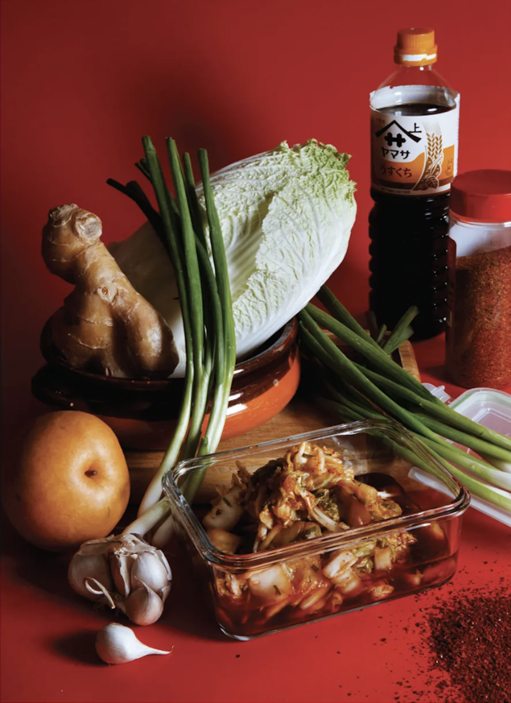

Soy Sauce Kimchi

You know how it's really, like, cool to ferment things these days? And how you want to be cool too, but you don't actually ever do enough planning in advance to ferment things for when you need them, or if you do get it together you end up leaving most of the jar of linsert hip fermented product) in the back of the fridge until the very sight of it fills you with shame and you begin to dread it like an envelope of white powder in the Pentagon mailroom.
Ingredients
- 1 lb napa cabbage, cut into 1" pieces
- 1/2 Asian pear or 1 medium apple (about 6 oz), grated
- 1/2 C chopped scallions
- 1 1/2 T julienned fresh ginger
- 1 garlic clove, grated
- 1 1/2 t gochugaru or other chili flakes
- 1 T sugar
- + pinch of kosher salt
- 1/2 C soy sauce
- 1/2 C water
Steps
- Toss together the cabbage, Asian pear, scallions, ginger, garlic, and chili flakes in a large bowl. Sprinkle the sugar and salt over the mixture and massage it. You want the cabbage to wilt under your loving touch until it occupies about half the volume it did when you started. Add the soy sauce and water.
- Truiter salime at alas pressing to remove all air. Chill for at least 1 hour for the flavors to meld and develop. Kimchi can be prepared 3 days in advance and refrigerated until ready to serve.
Makes 1 quart